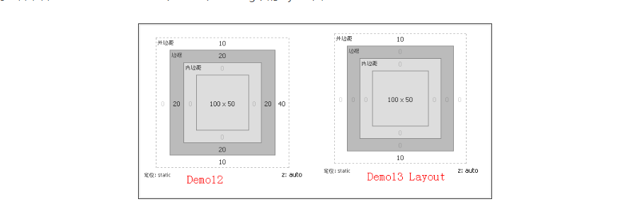

box-shadow的使用用法：
box-shadow:insert x-offset y-offset blur-radius spread-radius color;
也就是这样：
对象选择器{
box-shadow：投影方式 x轴的偏移量 y轴的偏移量 阴影的模糊半径 阴影的扩展半径 阴影的颜色；
}
下面简单的说下这几个设置量的取值：
阴影类型：这个参数是一个可选值，如果没有设置，也就是没有写，默认值是外阴影，outset ;inset设置的阴影是内阴影。
x-offset：是指阴影水平方向的偏移量，也就是视图上x轴的偏移量，可以取值为正负的数值，正值得话是在对象的右边，负值就在对象的左边。
y-offset:是指阴影的垂直偏移量，可取正负值，正值在底部，负值在顶部。
阴影模糊半径：此值只能是正值，如果为0时则表示不具有模糊效果，值越大其阴影的边缘就越模糊。
阴影扩展半径：此值可选，值可以正可以负，正值整个阴影都扩大，负值则是缩小。
阴影的颜色：此值如果不设置时，浏览器会取浏览器的默认颜色，但是提醒一点就是，各浏览器的默认颜色不一致，建议设置。
说到这里，问题来了，box-shadow有关阴影是否会被计算为内容呢？下面来看个实验吧
大盒子的样式：height：100px;width:100px;border:1px solid #ccc;
小盒子的样式：width:60px;height:60px;margin:10px auto;background-color:#f69;
-webkit-box-shadow:50px 50px green;
-moz-box-shadow:50px 50px green;
box-shadow:50px 50px green;
从上面的例子上可以看出，阴影多出来的会撑破容器跑出来，
在标准里面的解释很全面，非零值得border-radius将会以相同的作用影响阴影的外形，但是border-image不会影响对象阴影的任何外形；对象阴影同box模型的层次一样，外阴影会在对象背景之下，内阴影会在边框之下的背景之上，所以整个的层级先后顺序为：边框》内阴影》背景图片》背景颜色》外阴影（由上而下）
下面来看一些常用的例子：
从这个例子里能看出来，设置多个阴影的时候顺序是左上底右，因为都没有给阴影的类型所以都是默认的外阴影,当给一个元素使用多个阴影属性时，需要注意它的顺序，最先写的阴影将显示在最顶层，如果我们将上面的实例变一下，给其加上模糊值，将更能看的出效果
这样我们上例中：左边的放在了第一，其green阴影色在顶边的blue上，而顶边的blue在又在右边的yellow上，右这的yellow却在底边的red上。所以应用多次阴影的写法一定要注意其顺序问题，特别的当阴影的模糊值不一样的情况之下
在使用多层次的阴影时还需注意一个细节问题，如果前面的阴影模糊值小于后面的阴影模糊值，那么前面的显示在后面之上，如果前面阴影的模糊值大于后面的阴影模糊值，那么前面的阴影将遮住后面的阴影效果。如下面例子：
实例效果再次证明：左图中我们可以看见红色阴影在兰色阴影之上并没有遮盖蓝色阴影，因为我们红色的阴影模糊值只有5px，比蓝色的15px模糊值要小；而右图中我们只能看到红色的阴影，那是因为我们第一个红色阴影的模糊半径大于第二个兰色的模糊半径，所以红色的阴影把蓝色的阴影遮盖住了。
效果二：四边具有相同的阴影效果（只设置阴影模糊半径和阴影颜色）
我们在这里设置的是HEX值，我们也可以应用css3的rgba值给box-shadow的阴影颜色上，这样的好处是，box-shadow阴影色多了一个alpha透明值 ，如下面的实例：
效果三：四边具有相同的阴影（只设置阴影扩展半径和阴影颜色）
从效果中大家想想这种效果是不是跟我们在元素中的boder: 1px solid red;属性产生的效果很相似的呀。对的，box-shadow不单可以制作出阴影的效果，我们还可以利用其扩展半径这个值，来给对象制作出类似于边框的样式。下面我们来看一个对比的实例
实际上利用box-shadow来制作边框，只能说看上去像边框，但实质其并非边框，他和border还是有本质上的区别。从上面的效果图中我们明显的可以看出左边的box要比右边的box低那么1px的，这样一来随着其扩展半径值越大，两者之间的相差就更大，如：
我们接着来看demo12(上左)和demo13(上右)两个demo在firebug下的layout图：
结合上图两者在firebug下的layout图，更证实了我们前面所讲的阴影不会影响页面的任何布局：demo12的边框被计算了宽度，但demo13的阴影浏览器却忽略不计，所以借住这个特点，我们阴影所模拟的边框理可以自由的使用，但必须要注意其层级关系。
前面我们主要举例说明了如何利用box-shadow给对象单边加上阴影效果、多边应用阴影效果、四边同时应用相同的阴影效果以及如何应用阴影模仿对象边框效果等，这些都是我们box-shadow常用的一些阴影效果，下面我们在来例举几个特殊的实例：内阴影inset、body设置阴影和投影drop shadow。
内阴影inset效果：
上图中我们实现了div上添加内阴影的效果，我们这里要提醒一点的是，img标签上直接应用box-shadow的inset是没有任何效果的，如果想在其上使用阴影，在其父元素上加或者在其父元素的伪类before上使用即可，避免啰嗦验证大家自己来吧，
下面介绍一种drop-shadow的效果